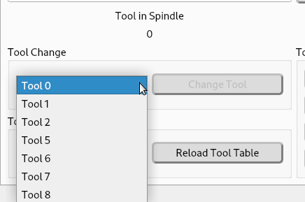
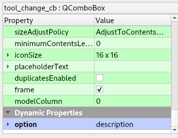
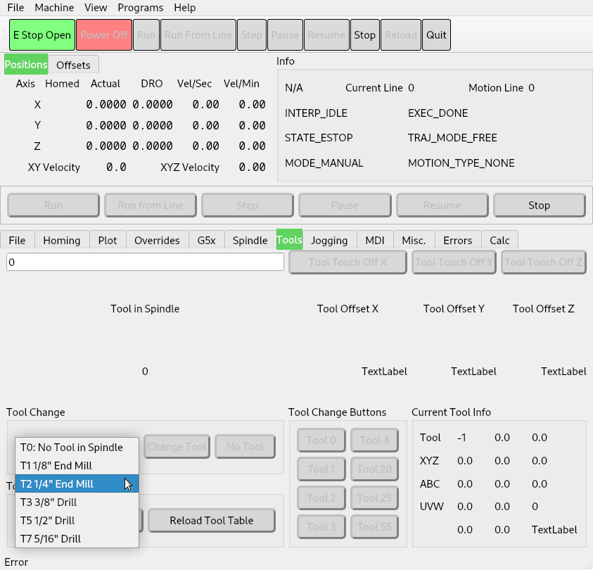
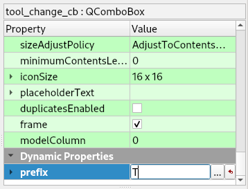
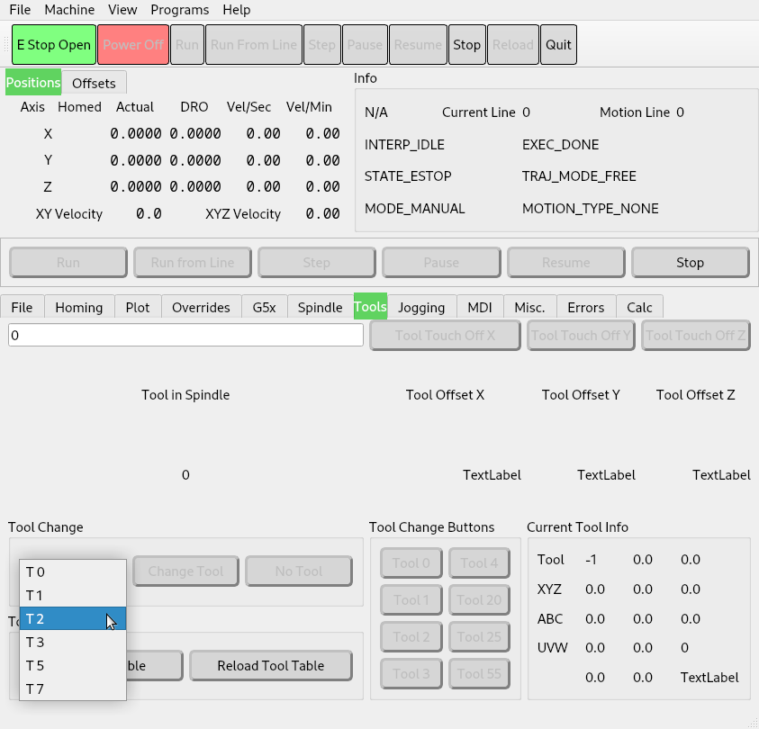
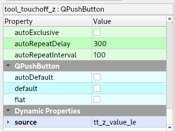

Tools¶
Tool Change¶
A tool change QPushButton, with a QComboBox to select the tool number to change to, is done with QPushButton named tool_change_pb and a QComboBox named tool_change_cb. The tool change combobox will automatically be populated with all the tools found in the tool table.
Control Function |
Object Type |
Object Name |
Tool Change |
QPushButton |
tool_change_pb |
Tool Selector |
QComboBox |
tool_change_cb |
To add the description of the tools to the tool change combo box add a Dynamic Property named option and set the value to description. See Dynamic Properties
The description from the tool table will be appended to the tool number.
If you have limited space you can define the tool prefix by adding a Dynamic Property named prefix and set the value to the prefix you want.
The tool number will follow the prefix.
Note
Only one option can be used, if option is found it is used and prefix will be ignored.
Manual Tool Change¶
All that is needed to add a manual tool change is to add the following to the ini file in the [FLEXGUI] section.
[FLEXGUI]
MANUAL_TOOL_CHANGE = True
This is without using a theme.¶
This is the blue-touch theme.¶
This is the dark-touch theme.¶
Warning
You can’t use the hal_manualtoolchange at the same time as the built in Flex Manual Tool Change, you must comment out all the hal_manualtoolchange lines or remove them.
Manual Tool Change Error¶
If you get an error that hal_manualtoolchange component exists look in your hal files for the hal_manualtoolchange lines in the Manual Tool Change Option below.
If you’re using a copy of one of the Axis sims the hal_manualtoolchange component can be hard to find. It’s recommended that you start with a simple configuration like the Flex example simple-sim.
Manual Tool Change Option¶
The HAL Manual Tool Change requires at least the following HAL code in the main hal file if not using the builtin Flex Manual Tool Change above.
# manual tool change
loadusr -W hal_manualtoolchange
net tool-change iocontrol.0.tool-change => hal_manualtoolchange.change
net tool-changed iocontrol.0.tool-changed <= hal_manualtoolchange.changed
net tool-number iocontrol.0.tool-prep-number => hal_manualtoolchange.number
net tool-prepare-loopback iocontrol.0.tool-prepare => iocontrol.0.tool-prepared
Tool Touchoff¶
To touch-off a tool to an axis, use a tool-touch-off QPushButton and a QLineEdit to enter the value of the touch off.
Control Function |
Object Type |
Object Name |
Tool Touch Off Value |
QLineEdit |
tool_touchoff_le |
Tool Touch Off |
QPushButton |
tool_touchoff_(axis letter) |
Optionally you can have a QLineEdit for each axis for tool touch off. Add a Dynamic Property named source to the tool touch off button and set the value to the name of the QLineEdit that is the source for that touch off button. See Dynamic Properties
Tool touch off QLineEdit for each axis.
Tool Touchoff Selected Axis¶
To have Axis style tool touch off add a QPushButton named tool_touchoff_selected_pb. You must have at least one QRadiobutton for an axis to select.
Function |
Widget |
Name |
Axis Select (0-8) |
QRadioButton |
axis_select_(0-8) |
Tool Touchoff |
QPushButton |
tool_touchoff_selected_pb |
Current Tool Status¶
Current Tool status of the tool loaded in the spindle. All the labels can have a Dynamic Property called precision with the number of digits you wish to show. The tool_id_lb and the tool_orientation_lb are integers.
tool_id_lb |
tool_xoffset_lb |
tool_yoffset_lb |
tool_zoffset_lb |
tool_aoffset_lb |
tool_boffset_lb |
tool_coffset_lb |
tool_uoffset_lb |
tool_voffset_lb |
tool_woffset_lb |
tool_diameter_lb |
tool_frontangle_lb |
tool_backangle_lb |
tool_orientation_lb |